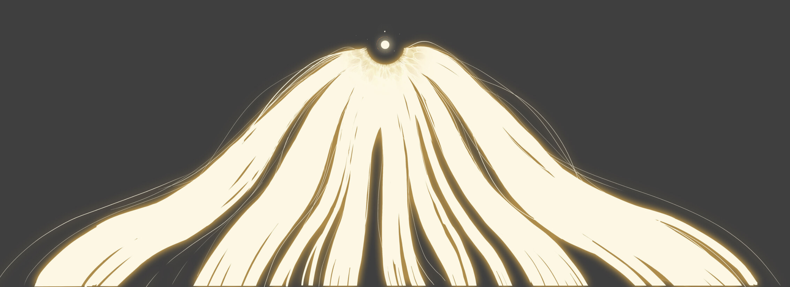
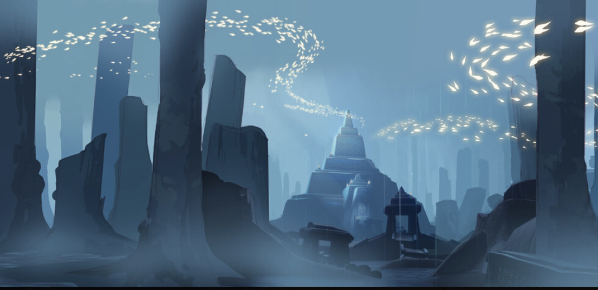
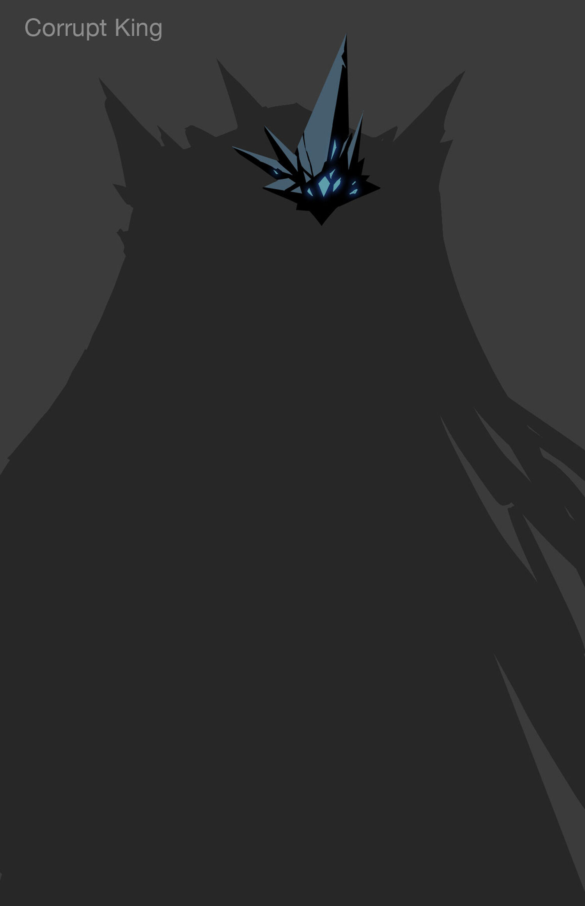
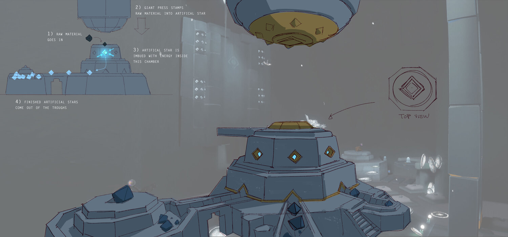
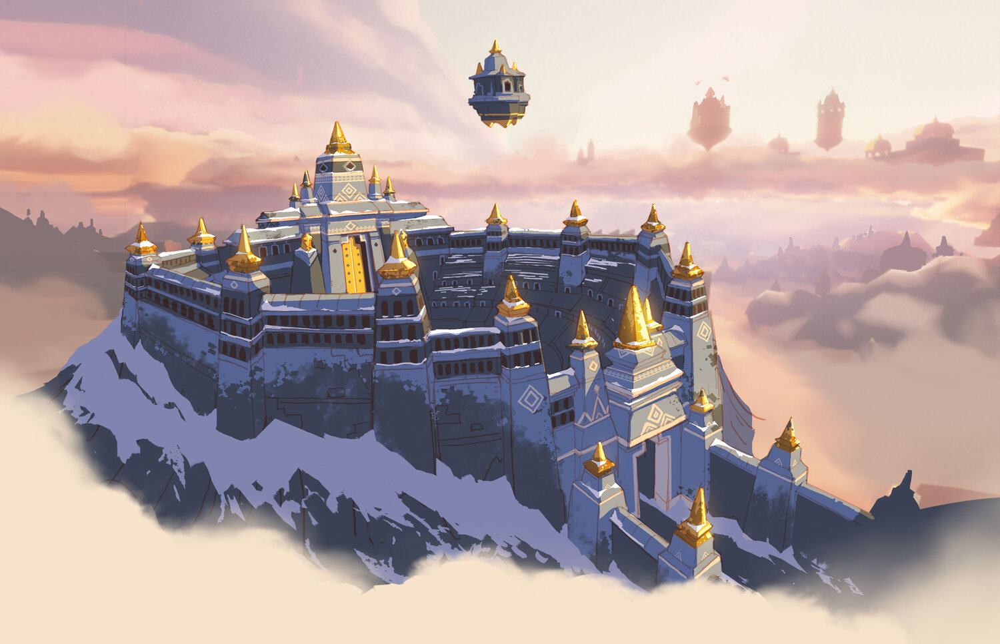
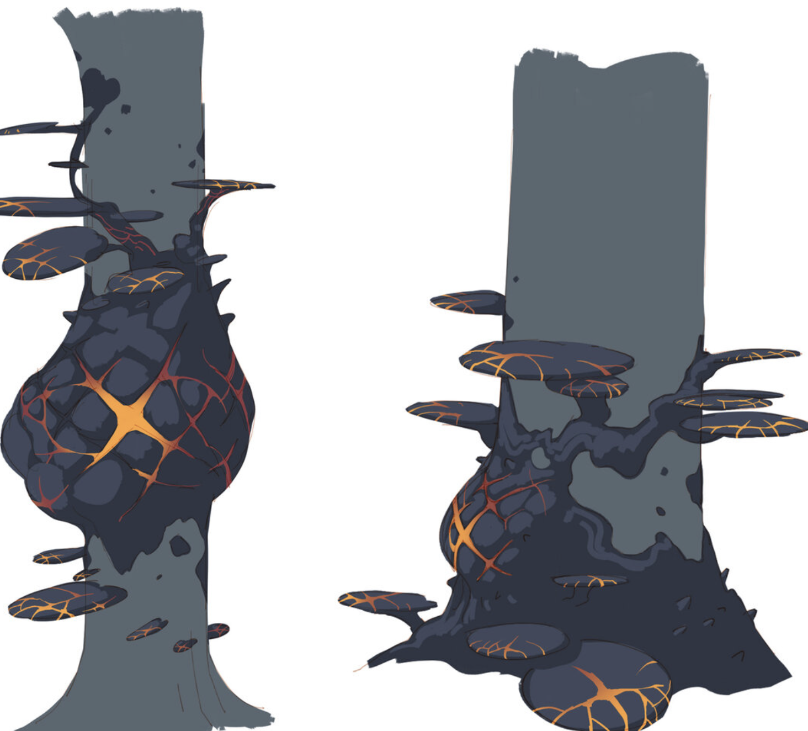
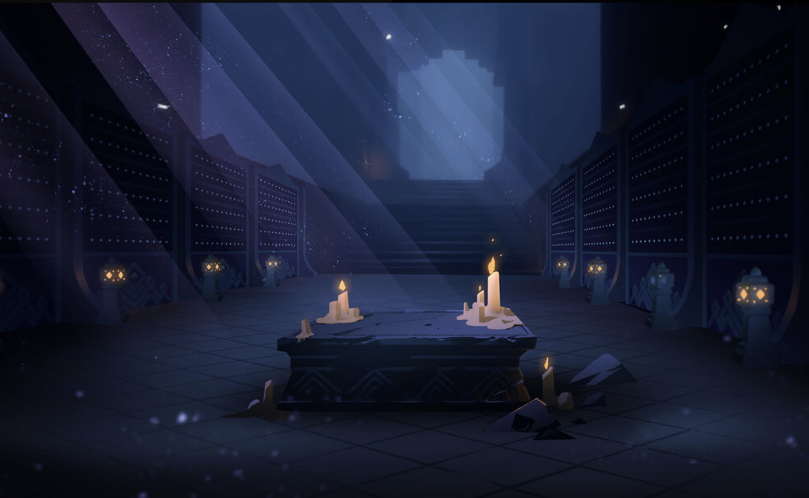
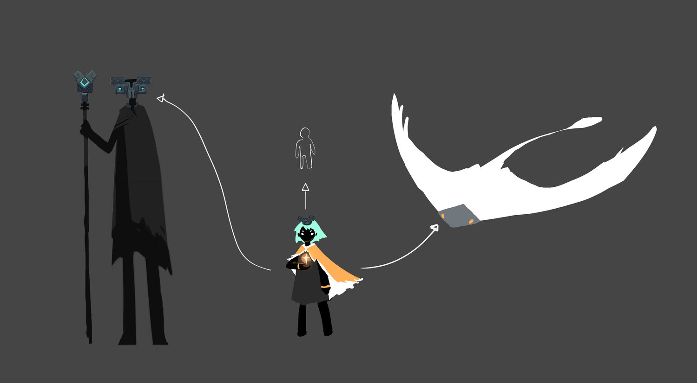

光之巨鸟是我们在暴风眼献祭结束、与小金人拥抱、最终投入天河、与解放的先祖们重逢后看到的巨大光团。 它不是一个物理存在的东西，我们可以将它理解为太阳、宗教中“天国”和创世神的融合体。
它的本质和表现方式，是「光」。其载体可以是星光、光之生物、烛火或是我们光之子的心火。
光之中，存在能量。所谓能量，就是能让我们斗篷回复的东西。 光的各种载体中，火最特殊，因为它不光蕴含光。

脱离光之巨鸟的“光”成为各种各样的光之生物，光之生物不断成长，然后消耗毕生能量回到圣地伊甸， 回归Megabird，以全新生命的形式开始新一轮的轮回。 这些光之生物，还有Megabird赐予的其他东西，就是先祖们赖以生存的能量。
先祖们的生活需要能量，能量来自云、光之生物和火等等。
所有灵魂都是Megabird的一部分，每个灵魂都会在世间轮回、收获知识和经验，然后回 到巨鸟之中。 万物皆为一体，一体衍生万物
Megabird将火光的力量赋予 生物们和「王子」。
王子选择了六位「长老」来管 理和发展它们的文明。
长老、先祖们和生物们都崇拜火光， 在生命的尽头前往圣地迎来死亡 和重生。
彼时光之巨鸟的力量最为强盛，所有的生命都在光明中彼 此相连。
生物的飞行能力相对先祖而 言是一大优势。在王子和国王 所需要的时候，生物中的长老 将火光给予他们。
王子与萨满先祖在禁林中探索，挖掘出了 能吸收火光的黑暗之石。
他们在森林中开采黑暗之石来驾驭、驱动全新的技术。先祖文明被提升到了全新的 高度。
王子赐予先祖们特殊的黑暗之石，让他们看起来神圣无比。
黑石技术吸收了太多火光，这导致生物 们开始袭击先祖。然而生物们败退了。
先祖文明进入黄金时代，王子加冕为王。 然而，黑暗之石开始腐化王子和先祖们。
先祖与Megabird的联系逐渐割裂。因为没有新生灵魂等待指引，摆渡人先祖隐退了。
在生物的另一次攻击之中，国生下令让战士先祖修建要塞和武器。
先祖用黑暗之石修剪了一艘强大的方舟。 生物们再次发动袭击，先祖登上方舟来寻求庇护。方舟驶向圣地，因为先祖们知道这样就不会被生物们追上了。
生物的长老们和他们的军队在这场史诗之战中自我牺牲，摧毁了方舟。方舟最终爆炸了。
满载黑暗的风暴从这场爆炸中产生，腐化在王国上下蔓延。先祖的黑暗之石诅咒了国王的皇冠，将他困在风暴之中。
暴风中心的生物被黑暗腐化，模样变得无法辨认，成为在地面徘徊的迷失者。
数十年过去，生物们开始重新向Megabird朝圣迁徙。世界曾遭背叛，满目疮痍。
悲伤的Megabird为王国降下祝福，全新的光之后裔诞生了。Megabird希望他们可 以再次让所有灵魂彼此相连。
摆渡人先祖试着为光之后裔指引他们的道路。直到有一天，他将你引领至天空王国…
世界在最初星光熠熠，充满丰沛的能量。但后来星光隐没，陆地上的能量匮乏，国家里的人们过着艰难的生活。这些人就是先祖，没法从心口掏火的普通人。
人们崇拜光，知道万物的能量来源于光，于是向星空祷告。
光之巨鸟选中了这个国家的王子，赐予他使用光（也可以理解成火，就是过场动画先祖们跟我们要的那个）的知识和力量。王子又选择了六位长老，就是过场动画里那几位（霞谷双子算一位），把相应的知识传授给他们。
与此同时，一些星光降落在陆地上，王子和长老们凭借对于光的认知，引领人们逐渐建设光之王国。还跟光之生物中的长老沟通，学习借助他们飞翔的能力。通过试炼的勇者，就可能借助斗篷飞翔（类似于预言季试炼，光之子 在终点）
六个长老处于同一个时代，而且彼此认识。同时，不同地图的门，又的确暗示着国家的不同阶段。也就是说，长老们在同一个时代。
被王子选中之后，首先忙碌起来的是晨岛长老。他教会其他人使用星光、白鸟和蝴蝶的力量，制造出能在云中飞行的船，带领大家离开能量枯竭的岛屿，前往能量充足的云端，并且建造神殿。
从晨岛神殿出发，天空王国的人们找到了云中的众多浮岛，也就是云野。大部分人都继续前往云野，晨岛长老则守着晨岛，不断指引开始新一轮轮回的灵魂。
在云野，小飞象先祖也忙活起来，转化各种光的能量，教大家怎么捕捉蝴蝶、怎么建立金顶塔，怎么用塔召唤出巨大遥鲲，以及造更多云中船等等……
随着云野的不断建设，王国的实力越来越雄厚，不但开发云中的浮岛们，还开发地面的雨林，也就是在雨林中，人们找到了黑暗之石——这种石头跟光之巨鸟属性相反，却像“光”一样蕴含能量。

在找到并开发黑石之前，人们采集和使用能量的方式非常初级——笨拙地抓蝴蝶、运蝴蝶等。黑石的出现助长人们的野心，科技轰轰烈烈发展起来，先祖发现就算不依靠光之生物也可以点亮灯笼、创造精密的机关。
他们砍伐树木，大肆开采黑石，毫无顾忌地破坏光之生物的生存环境……到后来，他们甚至制造出很高科技的机器。
沉浸在科技福利的人们，忽视了雨林中大肆生长的黑暗之物。他们大量使用黑石，逐渐被光之生物视为黑石阵营。生物们对人展开攻击，但人没有把光之生物们的袭击当回事。
雨林妈妈轮着自己的锤子，带着大家大踏步奔向现代化——而这个时候，云野先祖还呆在云野，即使工业在发展，农业肯定还有人坚守。我认为先祖们并不是一直迁徙，依据就是圣岛地图。圣岛显然是大家丰衣足食休闲度假的地方，说明即使后来王国发展了，云野也没有被抛弃。
黑石的高度开发，将天空王国代入辉煌时代——属于霞谷的时代来了。王国科技高度发达，娱乐高度发展，同时贫富差距巨大。人们沉醉在自己的无所不能里，认为已经摆脱了“自然”对人类的束缚，带着某种炫耀意味地建设起靠人工科技悬浮在云端的竞技场，大肆燃放璀璨辉煌的礼花……霞谷是天空王国文明的最高峰，它的一切有云野和雨林为它输送着血液，也是王国最后的辉煌。
因为生物们对人进行了疯狂反扑，暮土逐渐成为天空王国的最后防线。在最后的一个时期，其他所有地图的长老们应该都被黑暗生物们打得且战且退，回守暮土。在这里，他们一边咬牙抵御黑暗生物的袭击，一边绝望得发现，不知何时，身为长老的他们也失去了跟光之巨鸟的联系，无法运用火和光。被黑暗生物攻击之后，他们战死，灵魂也无法正常回归天际，而是被黑石诅咒，躯壳上蔓延出不规则的黑色晶石，将他们的灵魂困于此处无法安息。
光之生物想了很多办法，他们建立要塞，抵抗天空中飞过黑色巨影
他们建造起禁阁，安放牺牲者的记忆，存储科技成果，想办法把光凝聚成光海。
他们还派出一部分人去造方舟，企图用方舟载着所有人逃离，前往圣地（伊甸）。
可先祖类对黑石的依赖，让生物们觉得，先祖试图前往光的圣地根本是对光的玷污。它们发其不顾一切地攻击，甚至通过自爆的方式，阻拦了人类回归圣地的脚步，在伊甸前形成暴风眼，迫使人类再无法回归巨鸟的怀抱。
爆炸令黑暗力量在大地上蔓延，天空王国的末日来临，到处都是被腐化的生物和人，圣岛无害的小螃蟹，身上冒出黑色颗粒变成凶螃蟹；雨林隐藏图的白色遥鲲长老，变成我们熟知的冥龙……
代价如此惨痛，大地满目疮痍， 光之巨鸟送来了拯救者——能直接从身体里掏心火出来的光之子
游戏玩家所扮演的光之后裔，是先祖和光之后裔的合体。
小金人就是光之生物能量的一种表现，大家也可以理解成“光能量”“自然意志”。无翼状态的我们，相当于能掏心的先祖。吸收了小金人的我们，才是完成体的光之子。
所以，每次献祭之后，无翼状态的我们，步履蹒跚地走向孤寂地蜷缩在地上的小金人，就是一度被贪念吞没理智、恣意破坏自然的先祖重新组向伤痕累累的自然意志，对自然伸出手——人与自然再次拥抱，光与暗融合，彼此原谅，达成和解，催生出光之子们。
而光之后裔，可以用自己的心火点燃被困在石头一样躯壳里的祖先们。先祖们被点亮之后，终于可以魂归天际，去往伊甸，像我们最开始说的那些光之生物一样，融入光之巨鸟的怀抱，再以一种全新的存在方式回到世界上，可能变成一只蝴蝶、一个水母、又或者哇哇乱叫的光之后裔。
在光遇里，世界的最底层是水，水上浮着的是陆地，陆地之上是天空，空中有云层，云中有浮岛、可建建筑，云层之上、天空的至高处，是星光、是伊甸、是光之巨鸟的怀抱。
在未来的日子里，我们也许可以期待看到王子的更多故事。
OLSupport © 2023